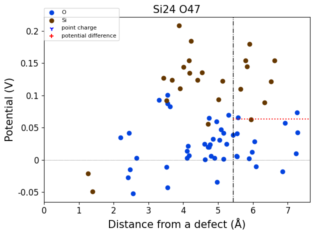
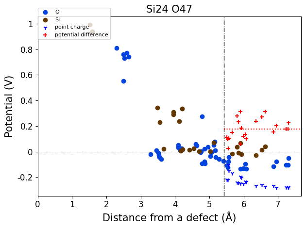
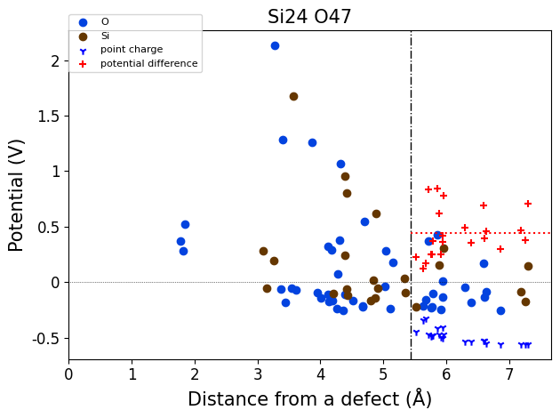
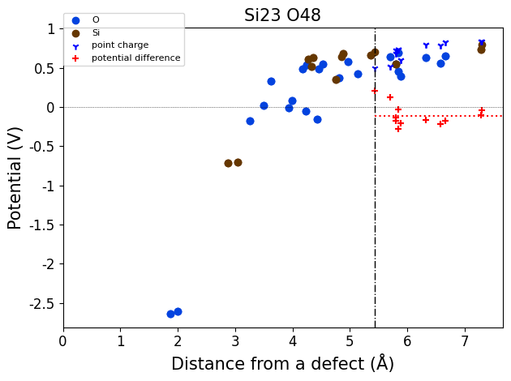
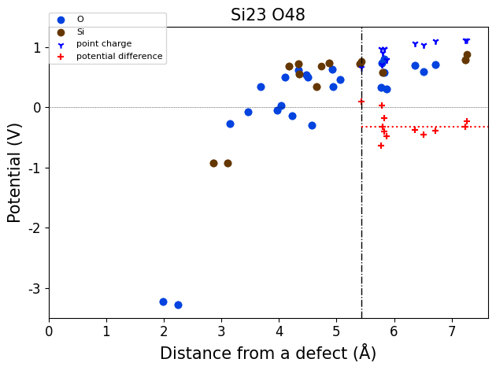
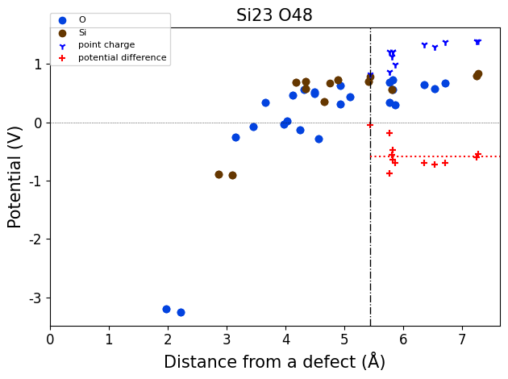
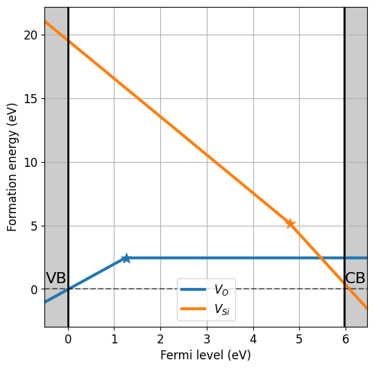

Import defect calculations#
The core object of defermi is the DefectsAnalysis class, which is a list of single point defects calculations (entries). A single entry is described by the DefectEntry class, which contains information on the defect and the result of the calculation (energies, corrections, etc). However, this object is in practise not initialized manually. The following sections preset examples on how to import your defects datasets.
DataFrame#
The most straightforward way to initialize the DefectsAnalysis class is by providing a pandas.DataFrame with the calculations result. The columns of the input DataFrame must be:
name: Name of the defect, naming conventions described below.charge: Defect charge.multiplicity: Multiplicity in the unit cell.energy_diff: Energy of the defective cell minus the energy of the pristine cell in eV.bulk_volume: Pristine cell volume in \(\mathrm{\AA^3}\)
Defect naming: (element = \(A\))
Vacancy:'Vac_A'(symbol=\(V_{A}\))Interstitial:'Int_A'(symbol=\(A_{i}\))Substitution:'Sub_B_on_A'(symbol=\(B_{A}\))Polaron:'Pol_A'(symbol=\({A}_{A}\))DefectComplex:'Vac_A;Int_A'(symbol=\(V_A - A_i\))
The following example shows how to create the DataFrame for neutral and charged \(Sr\) and \(O\) vacancies in \(SrO\).
[51]:
import pandas as pd
bulk_volume = 800 # cubic Amstrong
data_dict = [
{'name': 'Vac_O',
'charge': 2,
'multiplicity': 1,
'energy_diff': 7,
'bulk_volume': bulk_volume},
{'name': 'Vac_Sr',
'charge': -2,
'multiplicity': 1,
'energy_diff': 8,
'bulk_volume': bulk_volume},
{'name': 'Vac_O',
'charge':0,
'multiplicity':1,
'energy_diff': 10.8,
'bulk_volume': bulk_volume},
{'name': 'Vac_Sr',
'charge': 0,
'multiplicity': 1,
'energy_diff': 7.8,
'bulk_volume': bulk_volume},
]
df = pd.DataFrame(data_dict)
df
[51]:
| name | charge | multiplicity | energy_diff | bulk_volume | |
|---|---|---|---|---|---|
| 0 | Vac_O | 2 | 1 | 7.0 | 800 |
| 1 | Vac_Sr | -2 | 1 | 8.0 | 800 |
| 2 | Vac_O | 0 | 1 | 10.8 | 800 |
| 3 | Vac_Sr | 0 | 1 | 7.8 | 800 |
Now we can initialize the DefectsAnalysis class with the from_dataframe static method. We also need to provide the band gap and valence band maximum (VBM) of the pristine material.
[52]:
from defermi import DefectsAnalysis
da = DefectsAnalysis.from_dataframe(df,band_gap=2.0,vbm=0)
da
[52]:
| name | delta atoms | charge | multiplicity | corrections | |
|---|---|---|---|---|---|
| 0 | Vac_O | {'O': -1} | 0 | 1 | {} |
| 1 | Vac_O | {'O': -1} | 2 | 1 | {} |
| 2 | Vac_Sr | {'Sr': -1} | -2 | 1 | {} |
| 3 | Vac_Sr | {'Sr': -1} | 0 | 1 | {} |
The DefectsAnalysis object is iterable and subscriptable like a list and contains now a collection of DefectEntry objects.
[53]:
for entry in da:
print(entry)
DefectEntry
Defect: Defect: type=Vacancy, species=O, charge=0
Energy: 10.8000
Corrections: 0.0000
Charge: 0.0
Multiplicity: 1
Data: []
Name: Vac_O
DefectEntry
Defect: Defect: type=Vacancy, species=O, charge=2
Energy: 7.0000
Corrections: 0.0000
Charge: 2.0
Multiplicity: 1
Data: []
Name: Vac_O
DefectEntry
Defect: Defect: type=Vacancy, species=Sr, charge=-2
Energy: 8.0000
Corrections: 0.0000
Charge: -2.0
Multiplicity: 1
Data: []
Name: Vac_Sr
DefectEntry
Defect: Defect: type=Vacancy, species=Sr, charge=0
Energy: 7.8000
Corrections: 0.0000
Charge: 0.0
Multiplicity: 1
Data: []
Name: Vac_Sr
All the individual information about the defect calculations are accessible through attributes of the DefectEntry object, as well as the functions to compute the formation energy and defect concentration:
[54]:
entry = da[1]
print(entry.defect) # Defect object
print(f"multiplicity: {entry.multiplicity}")
print(f"Difference in number of atoms btw defect and pristine: {entry.delta_atoms}")
print(f"Symbol: {entry.symbol_charge}")
print(f"Symbol in Kröger-Vink notation: {entry.symbol_kroger}")
print(f"Formation energy: {entry.formation_energy()} eV")
print(f"Defect concentration at 1000 K: {entry.defect_concentration(temperature=1000)} cm^-3")
Defect: type=Vacancy, species=O, charge=2
multiplicity: 1
Difference in number of atoms btw defect and pristine: {'O': -1}
Symbol: $V_{O}$$^{+2}$
Symbol in Kröger-Vink notation: $V_{O}$$^{°°}$
Formation energy: 7.0 eV
Defect concentration at 1000 K: 6.583589071637988e-15 cm^-3
If correction terms to the energy are present, we can add them by adding a DataFrame column for each. The column name must begin with corr_, and the string that follows will be used as label in the corrections dictionary. For example:
[55]:
bulk_volume = 800 # cubic Amstrong
data = [
{'name': 'Vac_O','charge': 2,'multiplicity': 1,'energy_diff': 7,'bulk_volume': bulk_volume, 'corr_kumagai':0.02, 'corr_elastic':-0.02 },
{'name': 'Vac_O','charge':0,'multiplicity':1,'energy_diff': 10.8, 'bulk_volume': bulk_volume, 'corr_kumagai':0.0, 'corr_elastic':0.01},
{'name': 'Vac_Sr','charge': -2,'multiplicity': 1,'energy_diff': 8,'bulk_volume': bulk_volume, 'corr_kumagai':0.015, 'corr_elastic':-0.015 },
{'name': 'Vac_Sr','charge': 0,'multiplicity': 1,'energy_diff': 7.8,'bulk_volume': bulk_volume, 'corr_kumagai':0.0, 'corr_elastic':0.01},
]
df = pd.DataFrame(data)
df
[55]:
| name | charge | multiplicity | energy_diff | bulk_volume | corr_kumagai | corr_elastic | |
|---|---|---|---|---|---|---|---|
| 0 | Vac_O | 2 | 1 | 7.0 | 800 | 0.020 | -0.020 |
| 1 | Vac_O | 0 | 1 | 10.8 | 800 | 0.000 | 0.010 |
| 2 | Vac_Sr | -2 | 1 | 8.0 | 800 | 0.015 | -0.015 |
| 3 | Vac_Sr | 0 | 1 | 7.8 | 800 | 0.000 | 0.010 |
[56]:
da = DefectsAnalysis.from_dataframe(df,band_gap=2.0,vbm=0)
da
[56]:
| name | delta atoms | charge | multiplicity | corrections | |
|---|---|---|---|---|---|
| 0 | Vac_O | {'O': -1} | 0 | 1 | {'kumagai': 0.0, 'elastic': 0.01} |
| 1 | Vac_O | {'O': -1} | 2 | 1 | {'kumagai': 0.02, 'elastic': -0.02} |
| 2 | Vac_Sr | {'Sr': -1} | -2 | 1 | {'kumagai': 0.015, 'elastic': -0.015} |
| 3 | Vac_Sr | {'Sr': -1} | 0 | 1 | {'kumagai': 0.0, 'elastic': 0.01} |
[57]:
entry = da[1]
entry.corrections
[57]:
{'kumagai': 0.02, 'elastic': -0.02}
When computing formation energies, all the correction terms in the corrections dictionary will be added.
The DefectsAnalysis object can be converted to DataFrame with the to_dataframe method, and/or stored as csv or pickle file with the to_file method.
[58]:
da.to_file('./files/DA_import_data_example.csv')
da = DefectsAnalysis.from_file('./files/DA_import_data_example.csv')
da
[58]:
| name | delta atoms | charge | multiplicity | corrections | |
|---|---|---|---|---|---|
| 0 | Vac_O | {'O': -1} | 0 | 1 | {'kumagai': 0.0, 'elastic': 0.01} |
| 1 | Vac_O | {'O': -1} | 2 | 1 | {'kumagai': 0.02, 'elastic': -0.02} |
| 2 | Vac_Sr | {'Sr': -1} | -2 | 1 | {'kumagai': 0.015, 'elastic': -0.015} |
| 3 | Vac_Sr | {'Sr': -1} | 0 | 1 | {'kumagai': 0.0, 'elastic': 0.01} |
Vasp#
Defect calculations can also be imported directly from VASP directories with the from_vasp_directories static method. With this approach, the individual Defect objects will store the structural data as well, like the defective structure and position of the defect. Charge corrections (FNV or eFNV) can be performed automatically using the pymatgen-analysis-defects package. The multiplicity in the unit cell can be automatically determined for Substitution or Vacancy defects, it
is not yet implemented for Interstitial and DefectComplex.
Here is an example where we initialize the DefectsAnalysis object from directories with VASP calculations, using the defermi test files for vacancies in \(\mathrm{SiO_2}\).
[59]:
from defermi import DefectsAnalysis
dielectric_constant = 3.9
path_defects = '../defermi/tests/test_files/SiO2-defects/Defects/vacancies'
path_bulk = '../defermi/tests/test_files/SiO2-defects/Bulk-2x2x2-supercell'
da_vasp = DefectsAnalysis.from_vasp_directories(
path_defects=path_defects,
path_bulk=path_bulk,
common_path='2-PBE-OPT',
get_charge_correction='kumagai',
dielectric_tensor=dielectric_constant,
get_multiplicity=True,
initial_structure=True)
importing from ../defermi/tests/test_files/SiO2-defects/Defects/vacancies/Vac_O/q0/2-PBE-OPT
Defect automatically identified for defective structure with composition Si24 O47:
Defect: type=Vacancy, species=O, site= [0.13461155 0.20669714 0.39244549]

importing from ../defermi/tests/test_files/SiO2-defects/Defects/vacancies/Vac_O/q1/2-PBE-OPT
Defect automatically identified for defective structure with composition Si24 O47:
Defect: type=Vacancy, species=O, site= [0.13461155 0.20669714 0.39244549]

importing from ../defermi/tests/test_files/SiO2-defects/Defects/vacancies/Vac_O/q2/2-PBE-OPT
Defect automatically identified for defective structure with composition Si24 O47:
Defect: type=Vacancy, species=O, site= [0.13461155 0.20669714 0.39244549]

importing from ../defermi/tests/test_files/SiO2-defects/Defects/vacancies/Vac_Si/q-3/2-PBE-OPT
Defect automatically identified for defective structure with composition Si23 O48:
Defect: type=Vacancy, species=Si, site= [0.26554429 0.26554429 0. ]

importing from ../defermi/tests/test_files/SiO2-defects/Defects/vacancies/Vac_Si/q-4/2-PBE-OPT
Defect automatically identified for defective structure with composition Si23 O48:
Defect: type=Vacancy, species=Si, site= [0.26554429 0.26554429 0. ]

importing from ../defermi/tests/test_files/SiO2-defects/Defects/vacancies/Vac_Si/q-5/2-PBE-OPT
Defect automatically identified for defective structure with composition Si23 O48:
Defect: type=Vacancy, species=Si, site= [0.26554429 0.26554429 0. ]

[60]:
da_vasp
[60]:
| name | delta atoms | charge | multiplicity | corrections | |
|---|---|---|---|---|---|
| 0 | Vac_O | {'O': -1} | 0.0 | 48 | {'kumagai': 0.0} |
| 1 | Vac_O | {'O': -1} | 1.0 | 48 | {'kumagai': 0.36412325454690586} |
| 2 | Vac_O | {'O': -1} | 2.0 | 48 | {'kumagai': 1.271380937175993} |
| 3 | Vac_Si | {'Si': -1} | -5.0 | 24 | {'kumagai': 10.56056661808925} |
| 4 | Vac_Si | {'Si': -1} | -4.0 | 24 | {'kumagai': 7.3293307242822925} |
| 5 | Vac_Si | {'Si': -1} | -3.0 | 24 | {'kumagai': 4.502518434169503} |
Because the data was imported from VASP calculations, each entry will now contain structure data. When saving the object to a file, also the structures can be stored if the export format is pkl or json.
[61]:
entry = da_vasp[0]
entry.defect.site
[61]:
PeriodicSite: O (1.678, 0.6137, 4.263) [0.1346, 0.2067, 0.3924]
[62]:
da_vasp.to_file('./files/DA_import_data_vasp.pkl')
DefectsAnalysis.from_file('./files/DA_import_data_vasp.pkl')
[62]:
| name | delta atoms | charge | multiplicity | corrections | |
|---|---|---|---|---|---|
| 0 | Vac_O | {'O': -1} | 0.0 | 48 | {'kumagai': 0.0} |
| 1 | Vac_O | {'O': -1} | 1.0 | 48 | {'kumagai': 0.36412325454690586} |
| 2 | Vac_O | {'O': -1} | 2.0 | 48 | {'kumagai': 1.271380937175993} |
| 3 | Vac_Si | {'Si': -1} | -5.0 | 24 | {'kumagai': 10.56056661808925} |
| 4 | Vac_Si | {'Si': -1} | -4.0 | 24 | {'kumagai': 7.3293307242822925} |
| 5 | Vac_Si | {'Si': -1} | -3.0 | 24 | {'kumagai': 4.502518434169503} |
[64]:
da_vasp.plot_formation_energies(chemical_potentials=('SiO2','O-middle'));
Pulling chemical potentials from Materials Project database...
Chemical potentials for composition = SiO2 and condition = O-middle:
{'Si': -10.326093870000001, 'O': -7.398348924999999}
